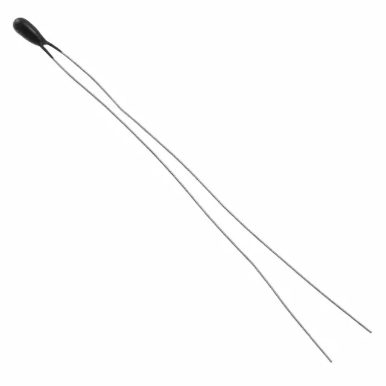
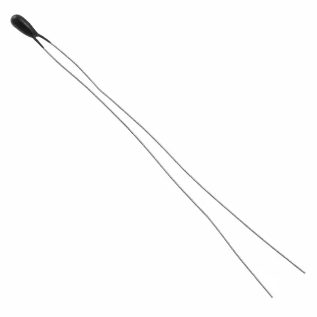
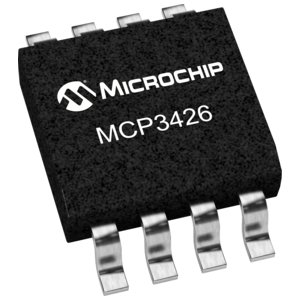
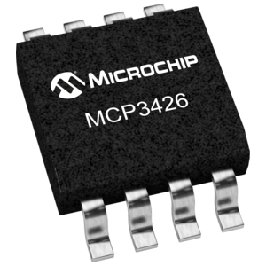
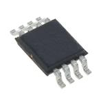
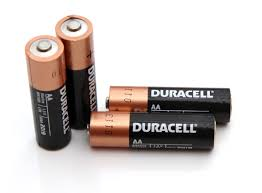
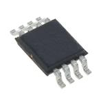
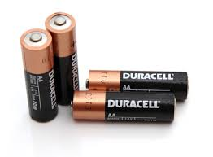

Underworlds
- project by MIT's Senseable City Lab
Research project analyzing wastewater and sewage for biomarkers of human health, with the goal of massively collecting data and using ananalytics to allow the health of the city to be monitored, from the scale of a neighborhood to the aggregate health of the entire city.
While this project aims to enable city-wide health monitoring through large-scale, city-wide data collection and analytics just like the Underworlds project, we also aim to provide individuals with the ability to have their health assessed on demand, by providing an interface through which they can log their lavatory usage and access their collected health data.
Toto Intelligence Toilet
A smart toilet designed by Japanese toilet-maker Toto, that features a "sample catcher" capable of obtaining urine samples, and which can track your urine temperature, analyze glucose levels and transmit the information to your computer over WiFi, for closer inspection by yourself or a trained physician.
This project is targeted at high-end personal health analytics (it features expensive analysis techniques such as glucose analysis and limited communication); in contrast, we aim to create a low-cost highly networked array of smart urine analyzers that can be used by individuals over a broad swath of geographic locations at any point in time, and which can allow for aggregate health of large areas to be tracked.
Hospital in a Toilet - Hackaday project
Project to create a compact device that can be embedded in an individual's toilet and which can perform basic urinalysis (particularly analyzing color and specific gravity of urine) to ease monitoring of both general health as well as chronic medical conditions.
Our project essentially scales the "Hospital in a Toilet" idea up, aiming to create a cost-effective distributed network of such "hospitals" across the city to allow individuals the convenience of checking on their health at any geographical location at any time, while also facilitating city-wide health monitoring.
 

 

 


